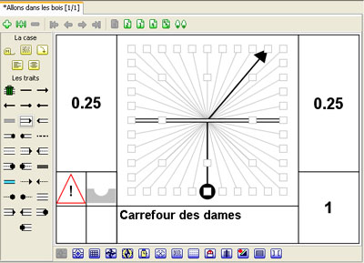

A présent, nous allons nous pencher sur la réalisation de dessins avec l'aide des cartes. Chaque type de carte est un assistant au dessin. Pour chaque dessin, vous pouvez utiliser en superposition quatre cartes, tout en sachant que la dernière est réservée pour les objets. Mais commençons par une réalisation simple. Pour cela nous allons utiliser la carte Carrefour qui permet de décrire un carrefour en quelques clicks de souris seulement.
Pour choisir le type de carte Carrefour, vous pouvez cliquer sur le bouton situé en bas de la fenêtre d'édition qui correspond à la carte Carrefour (en plaçant la souris sur le bouton, vous pouvez connaître sa signification). Vous pouvez également choisir
Carrefour dans le menu
Cartes - Type de carte, un quadrillage correspondant à la carte Carrefour apparaît au centre de la fenêtre d'édition de la case.
Sur la gauche de la carte, vous avez une palette avec différents boutons, les trois premiers (en jaune) concernent les données de la case et la possibilité de faire une rotation de la carte. Les boutons suivants concernent la carte. Dans le cadre de la carte Carrefour, il s'agit des différents types de traits. Pour placer un trait sur la carte, il suffit de choisir son type de trait puis de cliquer dans le petit carré gris où l'on souhaite qu'il se place. Pour effacer un trait, vous pouvez utiliser le trait "poubelle" ou le click droit dans le petit carré.
